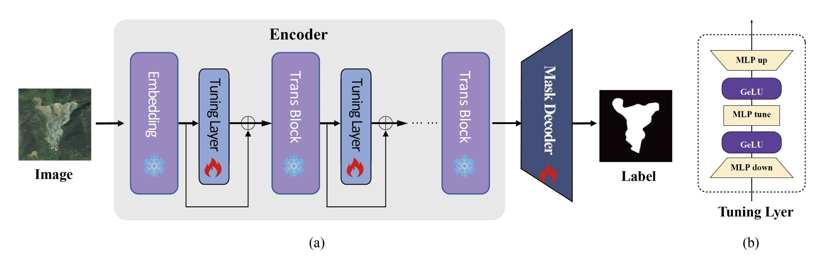

LandslideNet: Adaptive Vision Foundation Model for Landslide detection
Junchuan Yu1,2, Yichuan Li1, Yangyang Chen1,2*, Changhong Hou3, Daqing Ge1,2, Yanni Ma1,2, Qiong Wu1,2
- China Aero Geophysical Survey and Remote Sensing Center for Natural Resources, Beijing, China
- Technology Innovation Center for Geohazard Identification and Monitoring with Earth Observation System, Ministry of Natural Resources, Beijing, China
- China University of Mining and Technology(Beijing), Beijing, China
Abstract
Recent advancements in Vision Foundation Models (VFMs) like the Segment Anything Model (SAM) have exhibited remarkable progress in natural image segmentation. However, its performance on remote sensing images is limited, especially in some application scenarios that require strong expert knowledge involvement, such as landslide detection. In this study, we proposed an effective segmentation model, namely LandslideNet, which is realized by embedding a tuning layer in a pre-trained encoder and adapting the SAM to the landslide detection scene for the first time. The proposed method is compared with traditional convolutional neural networks (CNN) on two well-known landslide datasets. The results indicate that the proposed model with fewer training parameters has better performance in detecting small-scale targets and delineating landslide boundaries, with an improvement of 6-7 percentage points in accuracy (F1 and mIoU) compared to mainstream CNN-based methods.
Index Terms: LandslideNet, Landslide, Segmentation, Foundation Model, SAM, Fine-Tune
1. Introduction
Landslides often cause catastrophic damage and pose a great threat to human life and property. Therefore, timely and accurate identification of landslides is essential to minimizing these damages. The advancement of remote sensing technology provides sufficient data support for landslide identification. Although visual interpretation has high identification accuracy, the process is both time-consuming and labor-intensive. Therefore, automated landslide identification methods based on remote sensing technology have become a hot topic in recent years.
Current landslide detection approaches can be broadly categorized into three groups: the traditional approaches, the traditional machine learning approaches, and deep learning approaches. Traditional methods detect landslides by statistically analyzing the spectral characteristics, textures, and terrain information of the target. These methods are limited by poor generalization and require manual intervention. Traditional machine learning methods, such as support vector machine and random forest, are pixel-based methods. They are sensitive to noise and cannot fully use the spatial information of images. Currently, deep learning methods are becoming widely used for landslide detection. CNN-based models like U-Net, PSPNet, and DeepLabv3+ have significantly improved the efficiency and accuracy of landslide detection. In addition, many advances have been made in the research of transformer application, instance segmentation, multiscale feature fusion, and attention mechanisms. However, the lack of data, the limited generalizability of the model, and the difficulty of embedding expert knowledge remain challenges for landslide identification.
Recent advances in vision foundation models such as SAM have shown impressive performances in various natural image segmentation tasks. Due to its excellent generalization and zero-shot learning capabilities, SAM has attracted much attention in remote sensing image segmentation. However, its performance on remote sensing images is limited. This may be due to the fact that the interactive mechanism of SAM is highly dependent on the accuracy of the prompt information, and the data used to train SAM does not cover most remote sensing scenarios. Inspired by the recent advancements in the field of natural language processing, some researchers have attempted to utilize fine-tuning strategies to improve the performance of SAM for semantic segmentation in remote sensing imagery. However, these efforts have mainly focused on common remote sensing targets, and there is insufficient research on complex application scenarios that rely on expert knowledge, such as landslide identification.
To address these limitations, a landslide detection method, namely LandslideNet, based on local fine-tuning of the VFM has been proposed. In this study, a tuning layer is designed and embedded in a pre-trained encoder to dynamically learn prompt information, resulting in the adaptation of the SAM to the landslide detection scene. To the best of our knowledge, the proposed method achieves state-of-the-art performance on the Landslide4Sense and Bijie landslide datasets. In summary, this work presents a concise and efficient landslide identification method, explores the role of the tuning layer, and provides valuable insights into ways to fine-tune VFM for remote sensing segmentation tasks.
2. MATERIALS AND METHODS
2.1. Datasets
The data used in our experiments comes from two commonly used open-source landslide datasets. The Landslide4Sense dataset is derived from optical imagery captured by the Sentinel-2 satellite with a spatial resolution of 10 meters per pixel. It consists of 3,799 landslide images ranging over the four most landslide-prone regions of the world. The Bijie landslide dataset consists of 770 landslide images. It is extracted from optical images of Bijie City in the northwest of Guizhou Province, China, with a spatial resolution of 0.8 meters per pixel. Each dataset has been normalized and divided into two groups, with 70% and 30% used for training and validation, respectively.
2.2. Architecture of LandslideNet
Our main goal in this study is to fine-tune the VFM to transfer its powerful feature extraction capability to landslide detection scene where its previous performance was unsatisfactory. The overall architecture of LandslideNet inherits from the SAM, consisting of an encoder and a mask decoder. The image encoder of SAM is a Vision Transformer backbone pre-trained with the Mask Auto-Encoder strategy. The output of the image encoder is a 16-times down-sampled embedding of the input image. We freeze all parameters in the SAM’s image encoder and add a trainable tuning layer after each transform block to dynamically learn the prompt information. The mask decoder consists of a lightweight transformer decoder, and a segmentation head is also initialized with the pre-trained weights of the SAM, but we keep these parameters trainable in the training process. In LandslideNet, we do not use a prompt mechanism similar to SAM, because the fine-tuned tuning layer can be seen as a dynamic prompt.

Figure 1. Overview architecture of the proposed LandslideNet.
2.3. Design of the tuning layer
Proper design of the tuning layer will improve the training efficiency and inference accuracy of the model. The structure of our learnable tuning layer is shown in Figure 1(b). It has a simple structure consisting of three MLP layers forming a bottleneck structure. The GELU activation function is inserted between two MLP layers, as it provides smoother and approximate linearity gradients. The MLPdown is employed to down-project the original features to a smaller dimension. The MLPtune is used as a dynamic prompt layer; its dimension is the same as that of the MLPdown. The MLPup is used to expand the compressed feature back to its original dimension. Each tuning layer will be inserted after the transformer block with a skip connection. Supposing that the input features obtained by the tuning layer from the transformer block are ( x ), and the output result computed by the tuning is ( y ), which is denoted as:
where Wu , Wt, Wd are the parameters of each of the three MLP layers. λ is the GELU activation function.
There are many variants of the tuning layers, which can be sequential or parallel, and their structure and position can be adjusted. We also use CNN instead of MLP, or a combination of CNN and MLP, as the tuning layer. The tuning layer can also be placed inside the transformer block, and the use of skip connections is not mandatory. Through ablation experiments, we attempt to demonstrate that the currently proposed tuning layer structure is optimal for landslide detection.
3. RESULTS AND DISCUSSION
In this section, we assessed the performance of the proposed LandslideNet on the Bijie and the Landslide4Sense landslide datasets. The evaluation compared the effectiveness of various network models based on precision (P), recall (R), F1-score (F1), and mean intersection over union (mIoU).
3.1. Experimental Setting
The training procedure was conducted using the PyTorch framework (version 1.13.1) on an NVIDIA Tesla A100 GPU. The optimization employed the Adam with Weight Decay (AdamW) algorithm with an initial learning rate set to 2e-4. The loss functions utilized for training were binary cross-entropy and dice loss. Meanwhile, the proposed models were compared with CCNet, Deeplabv3+, UNet, and PSPNet. All models were trained using the same settings.
3.2. Results Analysis
The landslide detection results of different models on the Bijie dataset are shown in Figure 2. The results indicate that the semantic segmentation model is effective in detecting the landslide target. Most models were able to correctly distinguish the landslide target from the dirt road. However, LandslideNet outperformed all other models with results closest to the labels and significant advantages in terms of recognition accuracy and completeness. Figure 2a shows that the CNN-based model is ineffective in detecting landslides with complex morphology. On the other hand, as demonstrated in Figures 2c and 2e, our proposed method performs better for small-scale landslide targets or when texture features are indistinguishable from the background. The experimental results of the Landslide4Sense dataset presented in Figure 3 also confirm our previous conclusion. Due to the low resolution of the landslide4sense dataset, the features of landslide targets are even less obvious, as shown in Figures 3a, 3c, and 3d, and it is difficult for PSPNet, DeepLabv3, UNet, and CCNet to accurately detect landslide targets in such a scene. In contrast, the proposed model shows greater robustness.
Quantitative Evaluation Results
The tables below show the quantitative comparison of model performance on the Bijie and Landslide4Sense datasets, respectively.
Table 1. Quantitative comparison results on the Bijie dataset.
| Model | P | R | F1 | mIoU |
|---|---|---|---|---|
| CCNet | 85.24% | 83.64% | 84.41% | 75.09% |
| Deeplabv3+ | 89.19% | 87.40% | 88.27% | 80.28% |
| UNet | 85.81% | 84.77% | 85.28% | 76.20% |
| PSPNet | 90.77% | 86.39% | 88.42% | 80.52% |
| LandslideNet | 93.91% | 92.24% | 92.18% | 87.75% |
Table 2. Quantitative comparison results on the Landslide4Sense dataset.
| Model | P | R | F1 | mIoU |
|---|---|---|---|---|
| CCNet | 81.55% | 70.75% | 74.97% | 66.11% |
| Deeplabv3+ | 71.72% | 74.98% | 73.23% | 64.37% |
| UNet | 75.22% | 78.55% | 76.77% | 67.67% |
| PSPNet | 75.18% | 79.94% | 77.34% | 68.21% |
| LandslideNet | 83.40% | 84.48% | 83.93% | 75.36% |
In the quantitative evaluation, LandslideNet achieved the best results in all four metrics. Among them, recall and mIoU improved by an average of 6.22 and 7.29 compared to the second-best model.
Figure 2. Landslide detection results of different models on the Bijie dataset.
Figure 3. Landslide detection results of different models on the Landslide4Sense dataset.
Influence of the Tuning Layer
The improvement in the recall and mIoU metrics is due to the strong feature extraction capability of the VFM. However, foundation vision models are very demanding on GPU performance due to their large number of parameters, making them difficult to fine-tune using traditional methods. To address this issue, a tuning layer is added to the encoder, and the remaining parameters in the encoder are frozen during training. This reduces the number of trainable parameters of the LandslideNet from 312.48M to 4.2M, which is 1.3% of the original VFM.
Table 3. Quantitative comparison results on the trainable model parameters and model performance.
| Model | Trainable Parameters | Total Parameters | mF1 |
|---|---|---|---|
| CCNet | 71.27 M | 71.27 M | 79.69% |
| Deeplabv3+ | 40.35 M | 40.35 M | 80.75% |
| UNet | 75.36 M | 75.36 M | 81.03% |
| PSPNet | 46.58 M | 46.58 M | 82.88% |
| LandslideNet | 4.20 M | 312.48 M | 88.94% |
Figure 4. Comparison chart between trainable model parameters and model performance.
During the experiment, it was found that the landslide detection accuracy is affected by the structure and position of the tuning layer. The MLP structure is generally better than the CNN structure. Placing the tuning layer outside the transformer module with a skip connection is more helpful in improving detection accuracy.
The first image segmentation foundation model SAM is trained using over 10 million images and has strong segmentation capabilities on natural images. Local fine-tuning aims to adapt large models to downstream tasks while using minimal computational resources. This approach is applicable not only to landslide detection scenes but also to most remote sensing semantic segmentation scenes. It is believed that the large vision model, combined with multimodal prompts, may gradually replace the CNN-based segmentation method as the mainstream remote sensing semantic segmentation method. Our future work will focus on developing an intelligent interactive interpretation method for landslide detection based on the vision foundation model.
4. CONCLUSION
In this study, we apply a VFM to the landslide detection task for the first time. An effective segmentation model, namely LandslideNet, is proposed, which is realized by embedding a tuning layer in a pre-trained encoder and adapting the SAM to the landslide detection scene. Experiments conducted on two public datasets reveal that the proposed method is more competitive in terms of small-scale target and landslide boundary detection accuracy compared to traditional CNN-based methods. In addition, we discuss the influence of adapters with different structures on the detection results. This work not only deepens the application of large vision models in landslide detection but also provides a new technical solution for other remote sensing semantic segmentation tasks.
References
A. Mohan, A. K. Singh, B. Kumar, et al., “Review on remote sensing methods for landslide detection using machine and deep learning.” Transactions on Emerging Telecommunications Technologies, vol. 32, no. 7, e3998, 2020.
H. Zhang, M. Liu, T. Wang, X. Jiang, B. Liu, and P. Dai, “An Overview of Landslide Detection: Deep Learning and Machine Learning Approaches,” in 2021 4th International Conference on Artificial Intelligence and Big Data (ICAIBD), Chengdu, China, pp. 265-271, 2021.
O. Ghorbanzadeh, T. Blaschke, K. Gholamnia, et al., “Evaluation of Different Machine Learning Methods and Deep-Learning Convolutional Neural Networks for Landslide Detection.” Remote Sensing, vol. 11, no. 2, pp. 196, 2019.
X. Tang, Z. Tu, Y. Wang, M. Liu, D. Li, and X. Fan, “Automatic Detection of Coseismic Landslides Using a New Transformer Method,” Remote Sensing, vol. 14, no. 12, pp. 2884, 2022.
A. Kirillov, E. Mintun, N. Ravi, H. Mao, et al., “Segment Anything,” arXiv:2304.02643, 2023.
L. P. Osco, Q. Wu, E. L. de Lemos, W. N. Gonçalves, et al., “The Segment Anything Model (SAM) for remote sensing applications: From zero to one shot,” Int. J. Appl. Earth Obs. Geoinf., vol. 124, pp. 103540, 2023.
X. He, C. Li, P. Zhang, J. Yang, and X. E. Wang, “Parameter-efficient Model Adaptation for Vision Transformers,” arXiv:2203.16329, 2023.
K. Chen, C. Liu, H. Chen, et al., “RSPrompter: Learning to Prompt for Remote Sensing Instance Segmentation based on Visual Foundation Model,” arXiv:2306.16269, 2023.
L. Ding, K. Zhu, D. Peng, et al., “Adapting Segment Anything Model for Change Detection in VHR Remote Sensing Images,” arXiv:2309.01429, 2023.